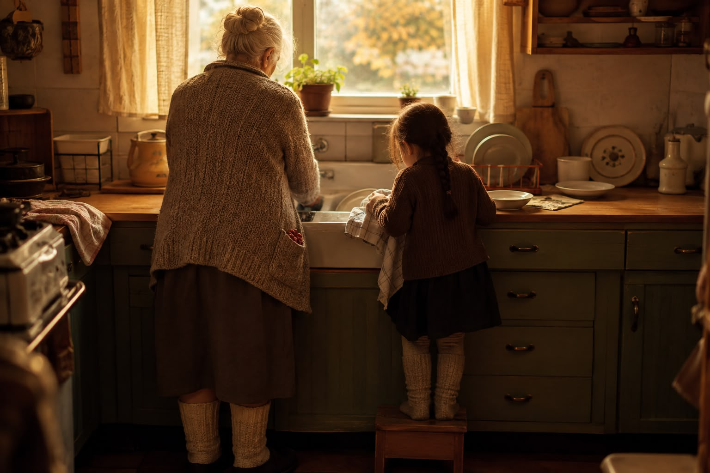

Hjemme hos Farmor er det trygt.
Farmor pusser tenner.
Hardt.
Hun grer håret mitt enda hardere.
Fletter det stramt.
Hun reparerer bukser og gensere.
Vasker klærne mine i linsåpe.
Tørker dem ute på en snor som snurrer og knirker i vinden.
Dynetrekket er av krepp.
Hun legger på et nytt hver morgen.
Hun sier aldri noe om alt det størkna snørret og tårene som har gjort trekket helt stivt.
Bare vasker det og henger det opp.
Hun har strikkejakke og støvler som nesten rekker opp til det knelange skjørtet.
I lommene har hun alltid bringebærdrops.
Et til oss hver etter hun har vaska opp, og jeg har tørket asjettene sånn som hun har lært meg.
Den dagen jeg mista asjetten i gulvet og den ikke kunne limes, fikk jeg to.
Hun brukte ikke så mange ord, Farmor.
Men hun sa så mye likevel.
Hun sa ikke så mye da kreften kom heller.
Men noe må hun ha sagt til sønnen sin, for han drakk aldri konjakk eller hørte på Elvis etter hun døde.
Det lukta linsåpe av jakka mi den dagen de senket henne ned.
Da vi parkerte utenfor blokka til Pappa var lukta erstatta med Petterøes nummer 3.
Han røyka alltid med bilvinduet igjen.
Kunne jo ikke risikere å bli sjuk av trekken.
Pappa har så mange historier.
Han er helten i dem alle.
Han ringer til tante fra telefonbenken i gangen.
Jeg hører han fortelle om når han satt bølla på butikken på plass.
Han sitter der på den burgunderrøde puta, legger ut om hvordan han fikk snørrvalpen til å beklage til den stakkars gamle dama som ble snytt for plassen sin i køen.
Han trekker røyken langt ned i lungene, holder røret fast mellom kinnet og skulderen,
blåser ut og sier:
– Jahaja, du – hun takket så mye og sa at jammen skulle det vært flere som deg her i verden.
Enda både han og jeg vet at det var mannen foran oss i køa som var helten, ikke han.
Han ser på meg, smiler mens han ruller en røyk til.
Får det der svømmende blikket han får når han ikke følger med.
Han hører ikke hva tante sier, han er allerede klar med en historie til.
Han slipper meg av i gata ovenfor huset til Mamma.
Svir nesten håret mitt med rullingsen da han gir meg en klem.
– Da står du her klokken fem neste torsdag?
– Ja.
Jeg vet han aldri er der før nærmere seks, men jeg er alltid presis.
Så han slipper å vente på meg.
Vil ikke at han skal kjenne hvor vondt det er å bli glemt.
Mamma drikker en halv flaske vin hver kveld, da får hun sove så godt.
Hun smatter på nikotintyggisen, de tjue andre hun har tygd på ligger som små baller på bordet ved siden av lenestolen.
Det var bedre da hun røkte, tente den ene røyken med den andre.
Selv om det svei i øynene så invaderte hvertfall ikke lukta tankene mine.
Hun reiser seg, går over stuegulvet med den tomme halvflaska.
Hører hun åpner skapet, fyller den opp igjen.
I langskapet på kjøkkenet deler moppen og vaskebøtta plass med Campari, gin og de store dunkene med vin vi har smugla med hjem fra sommerferie.
Bodegaen, der man kan tappe vin på tomme femliters vanndunker.
– Enn det, koster mindre enn ei halvflaske vin på polet hjemme dette her.
Hun smiler mens hun lemper inn i leiebilen vi har lånt for dagen.
To ekstra kofferter hjem, det er 40 liter vin det.
Ikke rart man aldri rekker frem til vaskebøtta og får det rent her hjemme.
På skolen har jeg en venn.
Men det er ikke ordene som skaper vennskapet.
Vi snakker ikke.
Vi må være stille.
Han sitter inntil meg, det er akkurat plass til oss to her – beina hans er lengre enn mine, han har knærne helt oppunder haka.
Jeg gir han ene brødskiva mi, vet han aldri får med hjemmefra.
Han gir meg tyggis.
Rød Bugg.
Den med lakrissmak.
Vi ser på de gjennom plankene.
De løper og ler og kaster snøballer.
De har ikke sett oss enda.
De vet ikke at den ene planken ved gymsaltrappa er løs.
Vi satt der helt til påsken.
Da vi kom tilbake etter ferien hadde vaktmesteren spikra planken på plass.
Han holdt ut til mai.
De fant han i skogen, hengende i beltet sitt.
Tanken på ungdomsskolen ble for mye å bære.
For meg vil vennskap alltid smake lakris.
For meg vil trygghet alltid lukte bringebærdrops.
Og for meg vil alltid Petterøes rulletobakk og vin ha en bitter smak av utrygghet.
Så er det ikke paradoksalt at mange år av livet mitt har gått til vindrikking?
At år av ungdomstiden og tidlig voksenalder gikk til jointer – blanda med nettopp den rulletobakken.
Det får meg til å tenke på noe jeg har lest av Gabor Maté.
Han skriver om traumer på en måte jeg skulle ønske noen hadde forklart meg for lenge siden.
At traumet ikke bare er det som skjedde.
Det er det som skjedde inni meg som følge av det som skjedde.
Ordet traume betyr sår.
Og kanskje er det nettopp sånn jeg forstår det best.
Som et sår jeg lærte meg å leve rundt.
For jeg fant mine måter å overleve på.
Jeg lærte meg å være stille.
Å følge med.
Å kjenne stemningen i et rom før jeg kjente etter hvordan jeg selv hadde det.
Å stå klar klokken fem selv om jeg visste at Pappa ikke kom før seks.
For da slapp i hvert fall han å kjenne hvordan det var å vente.
Jeg tilpasset meg.
Og det som en gang hjalp meg å overleve, fulgte med videre lenge etter at det jeg måtte beskytte meg mot, var over.
Maté skriver om hvordan en kan miste kontakten med seg selv når det blir for vondt å være til stede i det en kjenner.
Jeg kjenner meg igjen i det.
Kontakten med følelsene.
Med kroppen.
Med egne behov.
Ikke fordi det var noe galt med meg.
Men fordi frakoblingen en gang hadde en funksjon.
Det synes jeg er interessant når jeg ser på min egen avhengighet.
For hva om alkoholen ikke først og fremst handlet om alkoholen?
Hva om jeg ikke drakk fordi jeg likte smaken av vin så innmari godt?
Hva om jeg drakk fordi jeg likte det som skjedde inni meg etter det første glasset?
Stillheten.
Den lille pausen.
Den korte stunden der kroppen sluttet å være på vakt.
Maté er kjent for tanken om at en kanskje ikke bare skal spørre hvorfor avhengigheten oppsto, men hva slags smerte som ligger bak den.
Det spørsmålet forandrer ganske mye.
For da blir ikke spørsmålet:
Hvorfor klarte jeg ikke bare å skjerpe meg?
Det blir:
Hva var det rusen gjorde for meg som jeg ikke klarte å gjøre for meg selv?
Og svaret på det er egentlig ganske vondt.
Den ga meg ro.
Den ga meg en pause fra tankene.
Fra kroppen.
Fra uroen.
Fra den konstante følelsen av at noe snart kom til å skje.
Den ga meg – i noen timer – det Farmors hus en gang hadde gitt meg.
Trygghet.
Likevel er det mest paradoksale med min avhengighet at jeg brukte det som hadde luktet utrygghet gjennom hele barndommen til å skape en følelse av trygghet i meg selv.
Jeg drakk ikke fordi vin var trygghet.
Jeg drakk fordi rusen et øyeblikk fikk utryggheten til å tie.
Det er en forskjell jeg først har begynt å forstå nå.
Og kanskje er det også derfor jeg ikke lenger ønsker å hate den utgaven av meg som drakk.
Jeg trenger ikke synes det jeg gjorde var bra.
Jeg trenger ikke romantisere det.
Jeg vet hvor den veien fører.
Jeg vet at jeg ikke kan gå den veien igjen.
Men jeg kan prøve å forstå hvorfor jeg rusa meg.
Forstå at jeg prøvde å regulere noe jeg ikke hadde ord for.
At jeg prøvde å finne ro.
At rusen ble som et varmt teppe.
En midlertidig følelse av noe jeg hadde manglet.
Og nå som jeg begynner å se mine egne sår, mine egne traumer, skjer det noe annet også.
En sjelden gang kjøper jeg meg bringebærdrops.
Og når smaken kommer, kjenner jeg ikke bare tryggheten.
Jeg kjenner tapet av Farmor også.
Jeg tror kanskje jeg først nå tør å kjenne ordentlig på hvor vondt det var å miste henne.
For hun var en av de menneskene som lærte meg at trygghet faktisk finnes.
At den kan ligge i et rent dynetrekk.
I linsåpe.
I en asjett som knuser uten at noen blir sint.
I to bringebærdrops når jeg egentlig bare skulle fått ett.
Og kanskje er det nettopp dette jeg holder på å lære nå.
At jeg ikke trenger å drikke meg fram til den følelsen lenger.
Jeg kan savne Farmor.
Jeg kan kjenne på såret.
Jeg kan stå i uroen.
Og jeg kan, litt etter litt, lære meg å være et trygt sted for meg selv.
